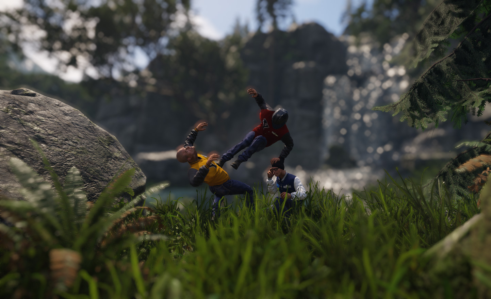
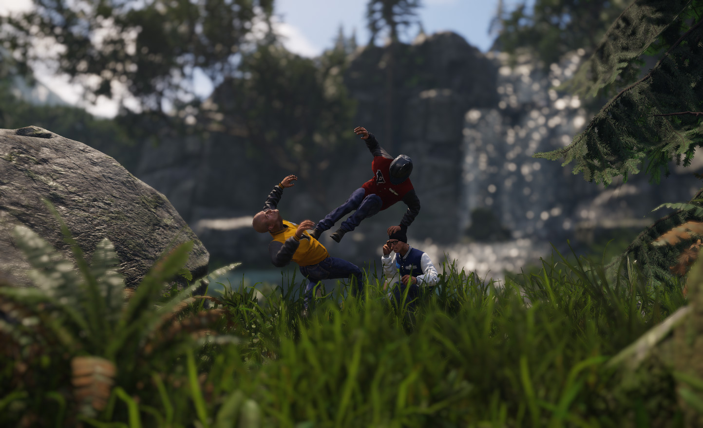

Выпущено 30 июля 2015 г.
Обзор
Основные моменты выпуска
Новая реализация глубины резкости
В CRYENGINE 3.8.2 представлена совершенно новая реализация DOF, которая исправляет многие артефакты, связанные с кровотечением по краям, присущие предыдущему методу, но в то же время обеспечивает более благоприятное использование полосы пропускания и, следовательно, эффективность. Новая реализация основана на методе сбора данных, который был прототипирован во время Ryse и представлен тогда на SIGGRAPH.
 
Слева: старая реализация DOF (обратите внимание на ореолы/силуэты вокруг персонажей). Справа: новая реализация DOF.
Улучшено качество размытия в движении
Наша реализация размытия в движении теперь использует более сложную схему взвешивания выборки, которая улучшает качество силуэтов при немного большей производительности. Степень размытия изображения теперь контролируется с использованием реальных настроек выдержки (например, 1/125 с).
Улучшенное качество объемного тумана
Мы приложили много усилий для дальнейшего улучшения качества нашего нового объемного тумана на основе вокселей. В частности, временная стабильность намного лучше, а артефакты мерцания и ореолов значительно уменьшены.
Важные изменения кода и данных
Новые унифицированные определения CRY_PLATFORM_xxx были введены в качестве замены специфичных для компилятора и/или пользовательских определений. Подробности смотрите в файле CryPlatformDefines.h.
Процесс сборки выделенного сервера обновляется. Ниже представлен обзор.
Расположение файла | Папка DLL | Описание |
|---|---|---|
Бин64/GameSDK.exe | бин64/*.dll | Это полноценный клиент игры. |
Бин64/GameSDK_Server.exe | бин64/*.dll | Здесь используются те же DLL, что и в полном игровом клиенте. |
Bin64_dedicated/GameSDK_Server.exe | Bin64_dedicated/*.dll | Здесь используется другой набор DLL, специально настроенный для выделенного сервера. |
Редактор
- Новый: добавлена подсказка для ограничения объекта.
- Новый: Больше вывода на консоль во время автоматического создания суставов.
- Новый: Добавлен узел блок-графика для физических столкновений.
- Новый: События префаба теперь передают любые данные.
- Новый: вызов метода GameDLL, когда пользователь нажимает кнопку «Обновить сценарии» в редакторе.
- Исправлено: (Префабы) Сбой при переименовании префабов (и, возможно, других объектов) с символами, отличными от ASCII.
- Зафиксированный: (Пакет оборудования) Поведение кнопки пробела для флажков (CE-6396).
- Исправлено: Поднятое оружие больше не исчезает после выхода из игрового режима (CE-6510).
- Исправлено: Обновление времени суток при вводе TimeOfDayEdit (CE-6027).
- Исправлено: Сбой при переименовании и удалении префабов.
- Исправлено: нажатие правой кнопки мыши HypergraphView приводит к появлению предупреждений в консоли (CE-6547).
- Исправлено: использовать относительный путь для сохранения последнего загруженного уровня (CE-6142).
- Исправлено: также вызывает событие сущности ENTITY_EVENT_XFORM_FINISHED_EDITOR при новом размещении объекта.
- Исправлено: (CryDesigner) Разрывы полигонов при перемещении вершины/ребра/многоугольника.
- Исправлено: (CryDesigner) Не отображается курсор в состоянии «Готово» в инструментах «Цилиндр» и «Конус».
- Исправлено: (CryDesigner) Отсутствуют некоторые полигоны в объекте дизайнера из версии 3.5.8 при загрузке объекта дизайнера в версии 3.8.1.
- Исправлено: (CryDesigner) Инструмент ResetXForm, который не работал с несколькими выбранными объектами.
- Исправлено: (Trackview) Узел комментариев теперь реагирует на переключатель включения/выключения (CE-6448).
- Изменено: Изменено название «глянцевость» на «гладкость» в материале UI.
- Изменено: Отобразить изменения выбора объектов из редактора в игру через IEditorGame.
- Изменено: Небольшие изменения в PrefabEvents и его FlowPrefabNodes.
- Изменено: Изменены настройки TOD по умолчанию: смещение высоты цвета тумана на 0 (по центру), радиальный лепесток уменьшен, чтобы он не появлялся перед геометрией, уменьшена максимальная экспозиция с 10 до 2,8, уменьшено дрожание теней в ночное время.
- Изменено: Версия Qt переключена на 5.4.2, добавлены библиотеки WebKit.
Рендеринг
- Новый: реализация DOF на основе сбора данных, которая устраняет артефакты затухания по краям и является более эффективной (переключается с помощью r_depthOfFieldMode 0/1).
- Новое: Улучшено качество размытия при движении.
- Новое: Добавлен CVar r_MotionBlurCameraMotionScale, чтобы уменьшить размытие при движении камеры, не влияя на размытие при движении объекта.
- Новое: Выдержка затвора при размытии изображения (r_MotionBlurShutterSpeed) теперь указывается как обратная величина времени экспозиции в секундах (например, 1/125 с).
- Новый: (Затенение) Уменьшите значение Френеля, когда коэффициент отражения поверхности ниже двух процентов (полезно для затенения бликов, а также позволяет вручную снизить блики на местности и растительности, где они могут показаться слишком сильными).
- Новый: Сделана суперсэмплинг настраиваемой для неосновных окон просмотра.
- Новый: (HLSLcc) Добавлены сценарии сборки Python для упрощения рабочего процесса внесения изменений.
- Рефакторинг: (Текстуры) Убрано неиспользуемое поле приоритета.
- Рефакторинг: (Текстуры) Удалены неиспользуемые функции HighQualityFiltering.
- Рефакторинг: Удалены неиспользуемые методы из PostEffects.cfx.
- Рефакторинг: Удалены устаревшие световые короба. Заменено томами клипов (CE-6206).
- Рефакторинг: Очистки, связанные с HDR: удалены устаревшие CVars r_HDRBrightOffset, r_HDRBrightThreshold, r_HDRBrightLevel, r_HDREyeAdaptationFactor, r_HDREyeAdaptationBase.
- Рефакторинг: (VR) Рефакторинг стереоресурсов VR и инициализация рендерера.
- Исправлено: Исправлены скайбоксы, отличные от HDR, когда включена обратная глубина (CE-6527).
- Исправлено: Исправлено изменение смещения ландшафта при использовании произвольного расстояния вблизи плоскости.
- Исправлено: (Тени) Сохраняйте порядок усеченных пирамид при сортировке теней по свету (CE-5168).
- Исправлено: (Тени) Пересчитывать кэшированные тени при изменении параметров отображения (CE-6430).
- Исправлено: (HLSLcc) В GATHER4 отсутствовала часть семплера в имени объединенной текстуры (CE-6674).
- Исправлено: Неработающий r_UseAlphaBlend заменен на r_TransparentPasses, чтобы пропустить рендеринг прозрачных объектов (CE-6226).
- Исправлено: Исправлена ошибка компиляции шейдеров на GLES3.1.
- Исправлено: Добавлена базовая поддержка копии PBO текстуры кадрового буфера по умолчанию (требуется для копирования в/из промежуточных текстур, например, на скриншотах) (CE-6439).
- Исправлено: Скорректирован тест глубины подобранных предметов при переключении между режимами камеры от 1-го лица и от 3-го лица (CE-72).
- Зафиксированный: Исправлен сбой мозаичного затенения при указании недопустимой текстуры и добавлено предупреждение в разделе displayinfo (CE-6427).
- Исправлено: Разрешить очень маленькие значения интенсивности солнца.
- Исправлено: NaN проверьте шейдер адаптации глаз.
- Исправлено: Неинициализированная память в STexState.
- Исправлено: Восстановление разрешения видового экрана при переключении контекста рендерера.
- Исправлено: Игнорируйте CVars r_Fullscreen, r_BackbufferWidth, r_BackbufferHeight в HandleDisplayPropertyChanges на консоли, а также на мобильном устройстве (CE-6595).
- Исправлено: Улучшен способ учета выдержки камеры, чтобы размытие изображения при движении не зависело от разрешения и частоты кадров.
- Исправлено: Отсутствует освобождение цепочки переключения и изменение разрешения стереорендерером в CD3D9Renderer::ChangeViewport (приводит к тому, что в редакторе все закрашивается черным).
- Исправлено: Неоднозначное значение GetNativeWidth/Height заменено на GetOverlayWidth/Height для получения UI и отладки разрешения текста, а также GetBackbufferWidth/Высота разрешения обратного буфера.
- Исправлено: Неустранимая ошибка заменена обычной ошибкой при превышении количества буферов экземпляра static (CE-3360).
- Исправлено: Используйте фактический текущий размер области просмотра при масштабировании 2D-геометрии (CE-6410).
- Исправлено: (DXGL) Всегда используйте собственное разрешение на мобильном телефоне. Незначительные исправления DXGL (CE-6499).
- Исправлено: (DXGL) Вызов ResizeTarget при изменении выходного разрешения — корректно применяет изменения к режиму рабочего стола в полноэкранном режиме и к размеру окна в оконном режиме; также обновите размеры области просмотра.
- Исправлено: (DXGL) CopyTexture и CopySubTexture теперь работают с текстурами фреймбуфера по умолчанию, хотя и не самым эффективным способом (ранее приводило к сбою).
- Исправлено: (DXGL) Исправлены ошибки, связанные с кешем, вызванные созданием кадровых буферов с ранее использованным именем, все еще находящимся в кеше. В частности, это решает проблему недетерминированных черных экранов при изменении разрешения.
- Исправлено: (HLSLcc) Исправлен скрипт сборки, игнорирующий флаг «переносимость».
- Исправлено: (VR) Исправлено изменение размера цепочки переключения, изменения полноэкранного режима и активация полноэкранного окна (alt+tab), когда sys_vr_support включен (CE-6458).
- Исправлено: (VR) Не создавайте/пересоздавайте промежуточные буферы в CD3DStereoRenderer::OnResolutionChanged(), если стереоустройство «нет».
- Зафиксированный: (VR) Не используйте временную поверхность глубины для буфера глубины глаза, поскольку она освобождается при выгрузке уровня. Исправлены неинициализированные данные, приводившие к потенциальному нарушению доступа при сбое создания текстуры Oculus (CE-6457).
- Исправлено: (VR) Исправлена проблема со стерео и несколькими окнами просмотра в CD3D9Renderer::ChangeViewport, из-за которой текстуры глаз воссоздавались при каждом изменении окна просмотра, даже если стерео не включено - теперь это происходит только тогда, когда создается или изменяется размер основной цепочки буферов (CE-6646).
- Изменено: Минимальная глубина понижения разрешения хранится в ztargetscaled.g.
Объемный туман
- Новое: Добавлен CVar r_VolumetricFogMinimumLightBulbSize для уменьшения мерцания света.
- Новое: Добавлен параметр радиального лепестка к объекту Light.
- Новое: Используйте уменьшенные карты солнечных теней.
- Новое: Добавлена поддержка окружающего освещения.
- Изменено: Смягчен резкий переход между зондами окружающей среды.
- Изменено: Уменьшение мерцания.
- Оптимизированный: Оптимизированный аналитический объемный туман.
- Оптимизировано: Улучшенная производительность.
- Исправлено: Исправлены несоблюдаемые r_DeferredShadingEnvProbes, r_DeferredShadingAmbientLights и r_DeferredShadingLights.
- Исправлено: Исправлено качество теней, которое не улучшалось, когда r_VolumetricFogShadow=0 и r_VolumetricFogSample>0.
- Исправлено: Уменьшена видимость стыков между лучевым и аналитическим объемным туманом.
- Исправлено: Исправлена ошибка, из-за которой громкость клипа не влияла правильно на объемный туман на основе вокселей при изменении параметра диапазона.
- Исправлено: Удалена избыточная переменная CVar r_VolumetricFog (CE-6464).
- Исправлено: Исправлено исчезновение аналитического объемного тумана (CE-6486).
- Исправлено: Исправлены артефакты горизонта при определенных настройках рампы (CE-6487).
- Исправлено: Исправлен объемный туман, который не выглядел единообразным при вращении камеры (CE-6444).
SVOGI (Экспериментальный)
- Новое: Добавлена поддержка цвета материала поверхности для проекторов (отсутствовало в базовом режиме 0).
- Исправлено: Отсутствие AO за пределами вокселизированной области в основном решается с помощью крупномасштабного SSAO.
- Исправлено: GI на затененных вперед материалах, таких как волосы и глаза.
- Исправлено: Отслеживание улучшений качества и исправление нескольких ошибок.
Двигатель
Общие сведения о двигателе
- Новый: Steamworks SDK обновлен до версии 1.33b.
- Новый: Добавление новых методов в октодерево, позволяющих перемещать и удалять примитивы, чтобы мы могли справляться с более динамичными ситуациями.
- Новый: добавлена переменная sys_build_folder. При необходимости указывает внешний полный путь к папке сборки, из которой нужно читать файлы pak. Это может быть полный путь к внешней папке или относительный путь к папке внутри локальной сборки.
- Новый: Превратить TIMEJUMPED_TRANSITION_TIME в CVar.
- Рефакторинг: Использование std::unordered_map вместо hash_map, std::tr1::unordered_map, ...
- Рефакторинг: Удален ненужный #undef GetClassName.
- Рефакторинг: Представляем определения CRY_PLATFORM_xxx в качестве замены специфичных для компилятора и/или пользовательских определений.
- Рефакторинг: (Сериализация, QPropertyTree) Объединение изменений библиотеки сериализации с исходным кодом yasli.
- Исправлено: (Лончер) Исправлен сбой при открытии любой карты (CE-6606) (CE-6607).
- Исправлено: (QPropertyTree) исправлен селектор ресурсов, не учитывающий флаг «только для чтения».
- Исправлено: Исправлено извлечение TBN из кватерниона.
- Исправлено: макросы ARRAY_COUNT и ARRAY_VAR переименованы в CRY_ARRAY_COUNT и CRY_ARRAY_VAR (CE-6273).
- Изменено: Очищены функции Set()/set() в Color_tpl.
- Изменено: Перенесен на следующую версию libtiff: tiff-4.0.4 (с tiff-3.0.3).
- Изменено: Перемещенные плагины конвейера теперь являются частью конфигураций выпуска.
- Изменено: добавлена поддержка std::unique_ptr и std::shared_ptr в библиотеке сериализации.
- Изменено: CListenerSet теперь также перебирает зарегистрированных слушателей с помощью специального функтора.
Физика
- Новый: Сделать области с ветром опционально активирующими объекты при движении с помощью параметра BreezeAwakeThreshold (CE-6308).
- Исправлено: Не используйте жестко запрограммированный тип поверхности mat_leaves, если прокси растительности уже имеет тип поверхности (CE-6493).
- Изменено: Избавиться от типов Vector2xxx (вместо этого использовать Vec2xxx).
Общий
- Новый: В CryCommon добавлен общий класс Octree.
- Изменено: Документированные флаги текстур.
Система
- Новый: Добавлена функция FormatV в строковые классы.
- Рефакторинг: удалена поддержка программного кода. Вместо этого используйте Recode.
- Рефакторинг: отключен кеш дескрипторов файлов.
WAF
- Исправлено: обнаружение инструментальной цепочки x86.
- Исправлено: используйте инструменты манифеста Windows 8.0 (MT.exe) для x86 и x64 (для автоматического определения: вкл./выкл.).
- Исправлено: Окончания строк cry_waf.sh преобразованы в стиль Unix.
- Рефакторинг: Реорганизовать автоматическое обнаружение MSVC.
- Изменено: Реорганизовать автоматическое определение платформы MSBUILD при создании решений VS.
- Изменено: удалить платформу, если она не поддерживается MSBUILD, после предоставления пользователю возможности создать папку.
- Изменено: Не отмечать ошибку, если платформа MSBUILD не существует и WAF выполнялась без ADMIN RIGHTS.
- Изменено: Для waf_files отображается ошибка, если ключ не уникален для уровня словаря.
- Изменено: Улучшение возможностей отладки.
3D-движок
- Новый: (VR) Разрешить рендеринг AuxGeom в стереоскопическом режиме.
- Новый: (VR) Измените FG-Node VR:GetCameraAngles на VR:TransformInfo и добавьте дополнительную информацию об игроке, камере и преобразовании HMD.
- Новый: Octree теперь позволяет переоценивать ограниченный набор узлов.
- Исправлено: Чтение невыровненных данных из скомпилированного фрагмента физических прокси.
- Исправлено: (Затенение) Учитывать область просмотра при понижении разрешения буфера глубины устройства.
- Исправлено: (Отладка) Исправлен информационный текст для e_DebugDraw 3 (CE-2839).
- Исправлено: (Отладка) Изменен макет профилировщика системы заданий (CE-2767).
- Исправлено: Процедурные объекты растительности больше не появляются на неправильных слоях (CE-6532) (CE-6649).
- Изменено: (VR) Переместить координаты Oculus для TrackingState в OculusDevice.
- Изменено: (Octree) подправил комментарии и преобразовал цикл for в цикл for на основе диапазона, как было предложено в предыдущем обзоре.
- Изменено: CVar sys_job_system_profiler создает разные цвета для разных платформ (CE-92).
Частицы
- Новое: Переработан MoveRelEmitter, добавлены опции для игнорирования размера или вращения эмиттера (CE-3783) (CE-4528).
- Исправлено: Исправлено исчезновение эмиттеров, вызванное неправильным указателем 3DEngine.GetRenderer. Теперь вычислите угловую плотность и максимальное расстояние от PassInfo.Камеры, когда это необходимо (CE-6282).
- Исправлено: восстановлена коллизия SimplePhysics и RigidBody. Исправления вложений GetRandomPos: более правильное разделение физики и рендеринга объектов в структуре частиц; использовать физическую геометрию StatObj при запросе вложения физики; Реализации GetRandomPos проверяют наличие пустых экстентов, исправляя сбои; исправлено обновление ложноположительного эффекта на основе TextureTiling memcmp (CE-2621).
- Исправлено: Исправлено поведение Facing=Velocity. Восстановлено поведение Stretch.OffsetRatio (CE-6373).
- Исправлено: избегайте деления на маленький родительский размер с помощью MoveRelEmitter. Исправлены несогласованные изменения положения и размера при изменении родительского размера (CE-6528) (CE-6530).
- Исправлено: Нормализовать quat после преобразования MoveRelEmitter, чтобы избежать накопительной ошибки и недопустимых матриц (CE-6757).
- Исправлено: Избегайте isqrt(0) в TargetMovement (CE-6529).
- Рефакторинг: Функции CParticleEmitter перемещены обратно в правильный файл (оставшийся код SPU).
RC/Инструменты
Инструменты Общие
- Рефакторинг: Удалите Patch/7za.exe, так как он уже находится в подпапке Tools.
- Рефакторинг: Удалите Patch/makepatchpak.bat, так как он не используется.
- Исправлено: (Статоскоп) Исправлен сбой при открытии двух журналов одновременно.
- Исправлено: (статоскоп) Показывать сравнение журналов в разделе «Информация об элементе» при использовании профилировщика функций (CE-6462).
- Исправлено: (CryMaxExporter) Исправлен сбой в 3dsMax при выборе вершин в конвертах CrySkin (CE-6656).
Компилятор ресурсов
- Новый: (RC ImageCompiler) Добавлены CVars r_TextureCompiling и r_TextureCompilingIndicator для отключения компиляции текстур и отображения текстур индикатора (CE-6186).
- Рефакторинг: Удалены профиль и настройки производительности RC.
- Исправлено: (RC ImageCompiler) Исправлен сбой при предварительном просмотре изображений в формате BC6 (пропускало преобразование в формат 4-float RGBA перед вызовом NormalizeImageRange()).
- Изменено: (RC ImageCompiler) Измерение ошибок переключено на измерение в гамма-пространстве, а не в линейном пространстве.
- Изменено: (RC ImageCompiler) Перенесен с PowerVR SDK 3.3 на 3.5.
- Изменено: Удалены RC и генератор шейдерного кэша из модуля «Инструменты/Редактор».
Анимация
CryAnimation
- Рефакторинг: Буфер команд: все, что выполняется в задании анимации, теперь выполняется через буфер команд. Увеличен размер буфера команд, поскольку теперь у нас больше команд. (см. Command::CBuffer::BufferMemorySize, теперь установлено значение 8192)
- Исправлено: Исправлено утверждение 'm_lastDatabaseUnloadTimeStamp <= currTimeStamp' из-за использования другого типа таймера для меток времени.
- Исправлено: Выполнился только первый модификатор позы на слое -1 («после физики»), теперь все.
- Исправлено: Проблемы с многопоточностью в AttachmentManager и вторичной анимации.
- Исправлено: Вторичная анимация: избегайте деления на ноль в CheckHalfCapsule.
Character Tool
- Исправлено: избегать предупреждения «элементы, не используемые BlendSpace» всякий раз, когда пользователь сохраняет файл BlendSpace. Теперь мы записываем узлы XML в файл BlendSpace только в том случае, если в элементе есть реальные дочерние узлы.
- Исправлено: Исправлен предварительный просмотр аниме-событий в blendspaces.
- Исправлено: удалено смещение для аудиособытий (CE-6554).
- Исправлено: Исправлено утверждение при выборе пространств смешивания в Character Tool (CE-6068).
- Исправлено: Исправлено медленное обновление при изменении параметров передвижения.
- Исправлено: Обход сбоя при изменении параметров фильтрации.
- Исправлено: Предотвратить сбой загрузчика (CE-5430).
- Исправлено: Сбой в функциях GlobalAnimationHeaderLMG::Init_XXX() при редактировании пространств смешивания (CE-6608).
- Изменено: пользователь теперь меняет диаметр вместо радиуса внутренней зоны столкновения ромба; улучшить описание UI (на основе нового декоратора сериализации RadiusAsDiameter) (CE-5850).
Mannequin
- Новый: в файловый менеджер добавлена кнопка «Добавить в систему управления версиями» (полезна, например, при добавлении новых дополнительных файлов .adb) (CE-5960).
- Новый: Procclip Эффекта частиц: Имя эффекта теперь можно редактировать с помощью стандартного браузера (CE-6064).
- Исправлено: Браузер анимации не обновляет свои пути при открытии и выборе нового AnimLayer в представлении дорожки (CE-5962).
- Исправлено: Укажите в CWnd::GetWindowRect, когда откроется файловый менеджер модели.
- Исправлено: Утверждение «Время завершения фрагмента установлено несколько раз».
- Исправлено: Утвердиться в CClipTrack::GetSecondaryTime (CE-6479).
- Исправлено: Сбой при удалении фрагментов из файла ADB вручную. Когда мы перезагружаем файлы ADB из монитора изменения файлов, мы теперь сбрасываем редактор, перезагружая текущий файл предварительного просмотра (аналогично тому, как это делается в другом месте) (CE-6381).
Действие
Flowgraph
- Новый: Дополнительные запрошенные изменения в узле графа коллизий.
- Новый: Улучшены подсказки по блок-схеме ограничений.
- Новый: Больше выходных данных в узле коллизий потокового графа.
- Новый: разрешить объектам прослушивать события от Flowgraph в коде.
- Исправлено: корректно отключен цветовой оттенок из изображения:FilterVisualArtifacts. Цвета оттенков, сохраненные до этого изменения, больше не могут быть загружены, и их необходимо установить заново (CE-6398).
- Исправлено: Сбой при переходе в игру и срабатывании готовых входов.
- Исправлено: Проверьте наличие объектов без физики в узлах графа ограничения.
- Исправлено: выходы дверных узлов «Lock» и «UnLock» теперь активируют события (CE-6397).
TimeDemo
- Новый: добавлена поддержка VR для Timedemo.
- Исправлено: Ошибка Timedemo для устаревшего формата.
- Исправлено: ротация игрока TimeDemoRecorder при воспроизведении HMD.
- Изменено: Рефакторинг, связанный с Timedemo, в View и TimeDemoRecorder.
Аудио
Аудио Общие
- Новый: Wwise обновлен до версии 2015.1, сборка 5416 (DEV-247)..
- Новый: добавлена возможность устанавливать положение и смещение поворота аудиопрослушивателя относительно его объекта (CE-6022).
- Новый: добавлен жестко запрограммированный RTPC "time_of_day", который обновляется, если присутствует, и в TOD вносятся изменения.
- Новый: Средняя очистка аудиоинтерфейса, удален неиспользуемый код, дополнительно реализована обработка отложенного воспроизведения событий промежуточного программного обеспечения.
- Исправлено: ATS не перезапускался при входе в игровой режим в редакторе.
- Исправлено: Не все коды ошибок были правильно переведены в код ошибки для обратных вызовов.
- Исправлено: TrackView Звуковые клавиши SceneNode и EntityNode не применялись, если не была установлена длительность.
- Исправлено: случай, когда узлы потокового графа RTPC больше не обновлялись.
- Исправлено: Ошибка в AreaManager, из-за которой сущности, находившиеся рядом с областью, никогда не покидали ее при телепортации (CE-5000).
- Исправлено: Ошибка в CAudioSystemImpl_wwise::PostEnvironmentAmounts, из-за которой метод всегда возвращал ошибку (DEV-251).
- Исправлено: Сбой при отсутствии аргументов для CVar es_AudioListenerOffset.
- Исправлено: Недействительность итератора в AudioProxy и AFCM.
- Исправлено: где воспроизведение AudioTrigger на объектах AAA и AAR не останавливалось при изменении триггера ATL (CE-6484).
- Исправлено: после процедуры сохранения/загрузки некоторые звуки окружающей среды исчезли (CE-5593).
- Исправлено: где ATS не обновил свою среду при размещении на уровне.
- Исправлено: Иногда на аудиообъектах устанавливалось неправильное окружение.
- Исправлено: где матрица смещения аудиопрослушивателя учитывала масштабирование (CE-6549).
- Исправлено: Неверное определение платформы IOS в AudioSystemImplCVars.cpp (DEV-252).
- Исправлено: установите для объекта прослушивания звука запрет на сериализацию во время сохранения/загрузки; в этом нет необходимости, поскольку весь объект создается заново.
- Исправлено: При удалении строки ATL-StartTrigger из объектов AAA и ATS соответствующее событие не останавливалось дополнительно, когда в журнале объектов появлялись скрытые сообщения об ошибках.
- Исправлено: (DRS) Не удалось добавить Drs-Proxy в массив SerializationOrder.
- Исправлено: Атмосфера не запускалась с помощью AAE, когда игрок появлялся внутри соответствующей области, находясь рядом с вложенной областью (CE-6683).
- Изменено: добавлено событие ATL ID в запрос информации об обратных вызовах для событий промежуточного программного обеспечения с отложенным запуском.
- Изменено: Компиляция микшера SDL в Linux.
- Изменено: Включена визуализация объединенных кластеров растительности типа сетки, для этого введены CVars e_MergedMeshesClusterVisualization и e_MergedMeshesClusterVisualizationDimension (DEV-231).
- Изменено: Если задан IS_EAAS, не включайте WWISE_USE_OCULUS.
ACE (редактор управления звуком)
- Новый: элементы управления выбираются в режиме редактирования сразу после их добавления.
- Новый: Удалить зависимость Qt для внешних .dll ACE (DEV-245).
- Новый: используйте QPropertyTree для свойств соединения (DEV-246).
- Исправлено: удаление последнего элемента управления в папке помечает родительский элемент как измененный (CE-6511).
- Исправлено: вручную добавить внутренние запросы к элементам управления по умолчанию (CE-6552).
- Исправлено: Исправлен сбой при удалении соединений (CE-6766).
- Изменено: Соединения управления сортируются на панели инспектора в алфавитном порядке.
- Изменено: последний подключенный элемент управления не добавлялся при подключении к предварительной загрузке.
AI Система
- Новый: MovementSystem теперь выполняет дополнительное перепланирование пути при изменении NavMesh во время выполнения (CE-6382).
- Новый: добавлена переменная ai_MNMAllowDynamicRegenInEditor, позволяющая повторно создавать MNM в редакторе в игровом режиме.
- Исправлено: BehaviorTreeManager: изменен порядок некоторых переменных-членов, чтобы предотвратить доступ к висячим указателям в их деструкторах (CE-6620).
- Исправлено: Конфигурация связи теперь загружается при инициализации системы AI, а не на ESYSTEM_EVENT_GAME_POST_INIT, чтобы обеспечить готовность всех данных связи во время запуска сценариев AI (CE-4383).
- Исправлено: Редактор в игровом режиме прослушивал изменения NavMesh для несуществующих агентов.
- Исправлено: NavigationSystem::RemoveAllIslandConnectionsForObject() ошибочно передано в OffMeshLinkID вместо EntityId.
- Исправлено: повторно добавлен встроенный редактор MBT, который был ошибочно удален в предыдущей версии (CE-6588).
- Исправлено: при запросе путей для MovementSystem всегда по умолчанию было жестко запрограммировано значение NavigationAgentTypeID, равное 1.
- Исправлено: Неинициализированное логическое значение, вызывающее сериализацию случайных значений в сохраненных играх. (CE-6550)
- Рефакторинг: IMovementActorAdapter теперь является const-правильным.
- Рефакторинг: Все функции перенесены с AIBubblesNotfier на AIBubblesSystem, поскольку SoftCode уже удален.
Игра
- Исправлено: добавлен недостающий HitTypes в HitTypes.xml: PistolBulletIncendiary, ShotgunShell/Solid, Rocket, ExplosiveGrenade (DEV-186).
- Исправлено: Эффект капель прозрачной воды при входе в транспортное средство (CE-5130).
- Зафиксированный: Предупреждения «Не удалось получить идентификатор эффекта принудительной обратной связи», появившиеся при запуске игры (CE-6548).
- Исправлено: Застревание при вставании после скольжения (CE-6347) (CE-6118).
- Исправлено: USE_BLEND_FROM_RAGDOLL не был определен, из-за чего AI не вставал после падения (CE-6426).
- Исправлено: Создайте запись в журнале, если эффект силовой обратной связи не найден (CE-6320).
- Изменено: В скрипт винтовки добавлена информация описания MovementModifiers. Умер firingSpeedScale до 0,75.